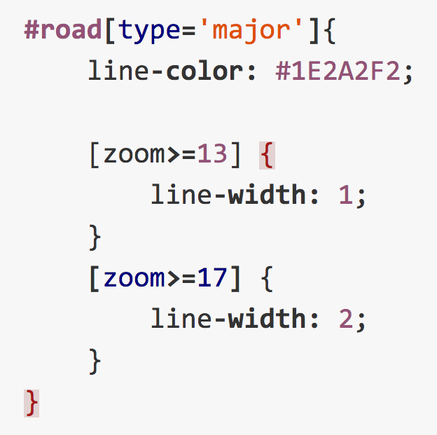

Intro to CartoCSS
Special thanks to Lyzi Diamond from MaptimeOAK & James Seppi from MaptimeATX
Housekeeping!
Links are in blue boxes,
red is just emphasis.
You can comment and edit on
github!Also, before we get going, make sure you have
mapbox studio installed.
Today we're going to learn how to style tiles.
BUT FIRST
What are tiles? Why are they so important?
Flashback
A long time ago, in a galaxy far, far away ...
Just Kidding
Flashback
Our 2nd Meetup
We discussed the Anatomy of a Web Map
We learned ...
It is a 256 x 256 pixel image stored somewhere on the web
Multiple tiles work together to represent what would instead be one large image
This is super important, because ...

All these little tiles load
way faster than one big map.
People sometimes refer to web maps which pre-load tiles outside of the screen as "slippy"
Tiles are rendered in advance (usually) then stored in a cache
The term for web maps which store tiles in a cache for ready access is a "smart" map
Because map tiles are just images on the web, so you can link to them individually.
In order to understand how this works, let's break down the URL.
http://tile.openstreetmap.org/4/2/6.png -- this is the name of the tile server.
http://tile.openstreetmap.org/4/2/6.png -- this is the z value, or the zoom level.
http://tile.openstreetmap.org/4/2/6.png -- This is the x/y value, or the place in the grid where the tile lives.
Ok ok ok, let's move on to actually making tiles
Remember: map tiles are just a bunch of images "rolled" up into a web service
SO: there are MANY ways to roll tiles
ArcGIS Online
ArcGIS Online, Tilestache
ArcGIS Online, Tilestache, Renderd
ArcGIS Online, Tilestache, Renderd, OpenLayers
ArcGIS Online, Tilestache, Renderd, OpenLayers, GDAL
ArcGIS Online, Tilestache, Renderd, OpenLayers, GDAL, etc., etc.
Tilemill was first, and really powerful, but pretty much only does raster and requires big OSM exports
Also a BIG NOTE: tilemill is deprecated, meaning they won't be updating it anymore
Mapbox studio does vector tiling, lets you connect to their data servers, BUT you have to pay for their standard plan to share your maps
Mapbox says there's a way to export mbtiles so you can host on your own server, but as of now I haven't figured out how
All that aside, both apps use CartoCSS to style tiles
Uhhhhhh what's that?
CartoCSS is a "rule-based" language for applying styles to maps
Meaning, you make rules for different parts of the map and it applies throughout
Based on Cascading Style Sheets (CSS), which defines formatting, colors, fonts, and basically everything having to do with a website's appearance
If you're coming from web development, this is basically the same approach as styling for the web
If you're coming from GIS, this is a way different approach to making maps
This is what CartoCSS looks like:

Every CSS rule has attributes and values
Attributes are the thing you're styling (polygon-line, polygon-fill, etc.), and the value is how it's styled (line weight, color, etc.)
Important: each attribute/value line is followed by a semi-colon
To style a specific element, we use a selector
ID selectors target an element's unique ID
Class selectors target potentially multiple datasets grouped by their class
Octothorpe (#) = ID Selector, dot (.) = class selector
"Map" is another selector, but just refers to the background where there isn't any data to style
Filters make selectors even more specific, only applying in certain conditions
What would this style apply to?:
Multiple selectors can be filtered by using commas (applies when either condition is true) or no commas (when both conditions are true)
Either/or
Both
Rules are applied in order of appearance and overwritten by subsequent rules
Nesting selectors inside of other rules helps keep things tidy

WOW SO CLEAN
Another really cool thing: variables!
Variables let you access attributes and call them later on
SUPER USEFUL
Colors can be defined in a bunch of ways
- Name: blue
- Hex: #47DAD3
- RGB (red, green, blue): rgb(71, 218 211)
- HSL (hue, saturation, lightness): hsl(177, 67%, 57%)
There's a lot you can do with CartoCSS, but let's START STYLING

{kind=link}